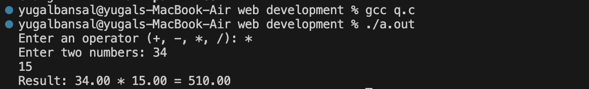

About Me
My name is yugal bansal. I am 17 years old. I like to play badminton, love video games, and driving.
This is my mini project which includes all the things like about me, education, skills, projects, and contact information.
My name is yugal bansal. I am 17 years old. I like to play badminton, love video games, and driving.
I did my 10th from DAV Public School, fatehabad and 12th from delhi .
Currently, I am pursuing B.Tech in Computer Science and Engineering from Delhi Technological University (formerly Delhi College of Engineering).
Description: using c language and functions to build calculator
Code:
#includedouble add(double a, double b); double subtract(double a, double b); double multiply(double a, double b); double divide(double a, double b); int main() { char operator; double num1, num2, result; printf("Enter an operator (+, -, *, /): "); scanf("%c", &operator); printf("Enter two numbers: "); scanf("%lf %lf", &num1, &num2); switch (operator) { case '+': result = add(num1, num2); printf("Result: %.2lf + %.2lf = %.2lf\n", num1, num2, result); break; case '-': result = subtract(num1, num2); printf("Result: %.2lf - %.2lf = %.2lf\n", num1, num2, result); break; case '*': result = multiply(num1, num2); printf("Result: %.2lf * %.2lf = %.2lf\n", num1, num2, result); break; case '/': if (num2 != 0) result = divide(num1, num2); else { printf("Error! Division by zero.\n"); return 1; } printf("Result: %.2lf / %.2lf = %.2lf\n", num1, num2, result); break; default: printf("Error! Invalid operator.\n"); } return 0; } double add(double a, double b) { return a + b; } double subtract(double a, double b) { return a - b; } double multiply(double a, double b) { return a * b; } double divide(double a, double b) { return a / b; }
DEMO OUTPUT OF THE CALCULATOR

Description: Used header file <unistd.h> for the sleep function to show time updates every second.
Code:
#include#include #include #include //for sleep function int main() { // DIGITAL CLOCK time_t rawtime=0;//jan 1 1970 (epoch) struct tm*pTime=NULL; bool isrunning=true; printf("DIGITAL CLOCK\n"); while(isrunning){ time(&rawtime); pTime=localtime(&rawtime); printf("\r%02d:%02d:%02d",(*pTime).tm_hour,(*pTime).tm_min,(*pTime).tm_sec); //\r is to move back the cursor at the starting of the line sleep(1); } return 0; }
Created a small C program to take and display student data using structures.
Mobile: 7988160152
Email: yugalbansal2007@gmail.com
College Email: yugalbansal_cse_25a06071@dtu.ac.in
GitHub: github.com/yugalbansal2007